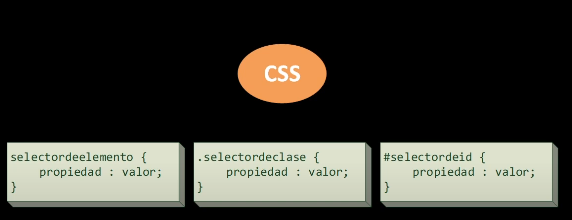

Curso HTML y CSS
En CSS, comúnmente cuando aplicamos estilos, estos se aplican a toda la página en general, sin embargo, hay manera de aplicar
estos estilos a elementos diferentes dentro de la misma página.
Para ello, se ocupan elementos que son conocidos como selectores, los cuales nos permiten, justamente, poder seleccionar elementos
en particular para poder aplicarles estilos.
Entre los más utilizados están:
Universales: Se utiliza para seleccionar todos los elementos en un documento HTML.
Se representa con un asterisco (*) y se utiliza para aplicar estilos a todos los elementos en una página.
De elementos: Permite seleccionar elementos de un mismo tipo en HTML basados en el nombre de su etiqueta.
Por ejemplo, el selector «p» seleccionaría todos los párrafos en un documento HTML.
De clases: Permite seleccionar elementos HTML que tienen una clase específica. Podemos creer la cantidad de clases que creamos necesarias,
donde dentro de cada una de ellas podemos agrupar una serie de elementos que tengan cosas en común.
Las clases se definen con el atributo «class» de un elemento HTML y se identifican en el archivo CSS con un punto (.) antes del nombre
de la clase en cuestión que se quiere seleccionar.
Por ejemplo, el selector "títulos" seleccionaría todos los elementos HTML de una clase llamada "titulos".
De ID: Permite seleccionar un elemento HTML que tiene una id en específico.
Las ids se definen en el atributo "id" de un elemento HTML y se identifican con el numeral/almohadilla (#) antes del nombre de la id en el archivo CSS.
Por ejemplo, el selector «#principal» seleccionaría el elemento HTML que cuente con la id llamada "principal".
Para finalizar el apunte, se deja una pequeña imagen de referencia, la cual, contiene la sintaxis básica utilizada para los selectores.
